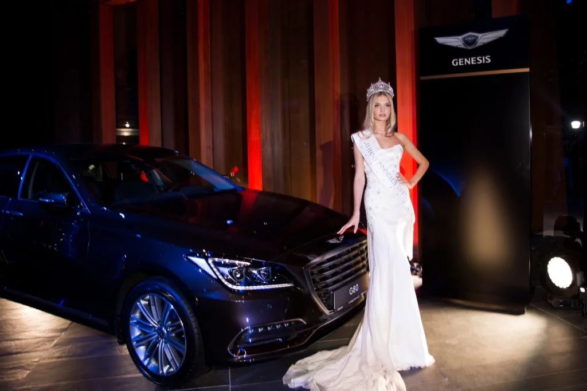
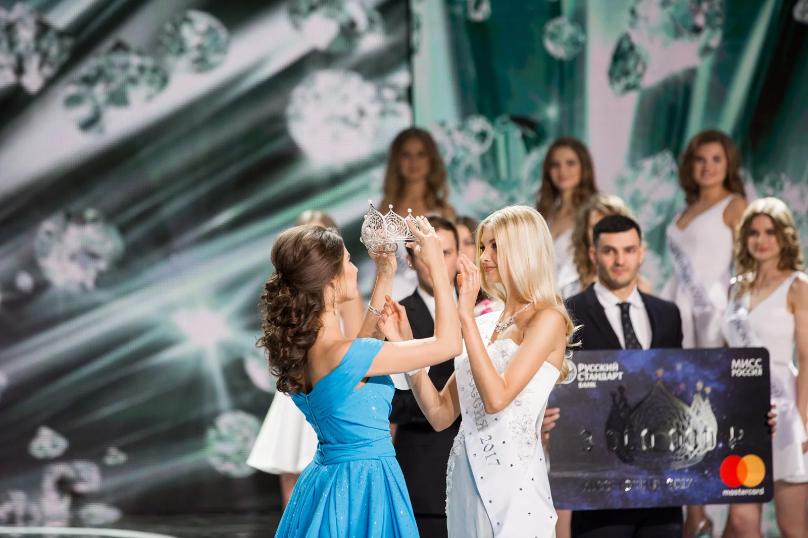
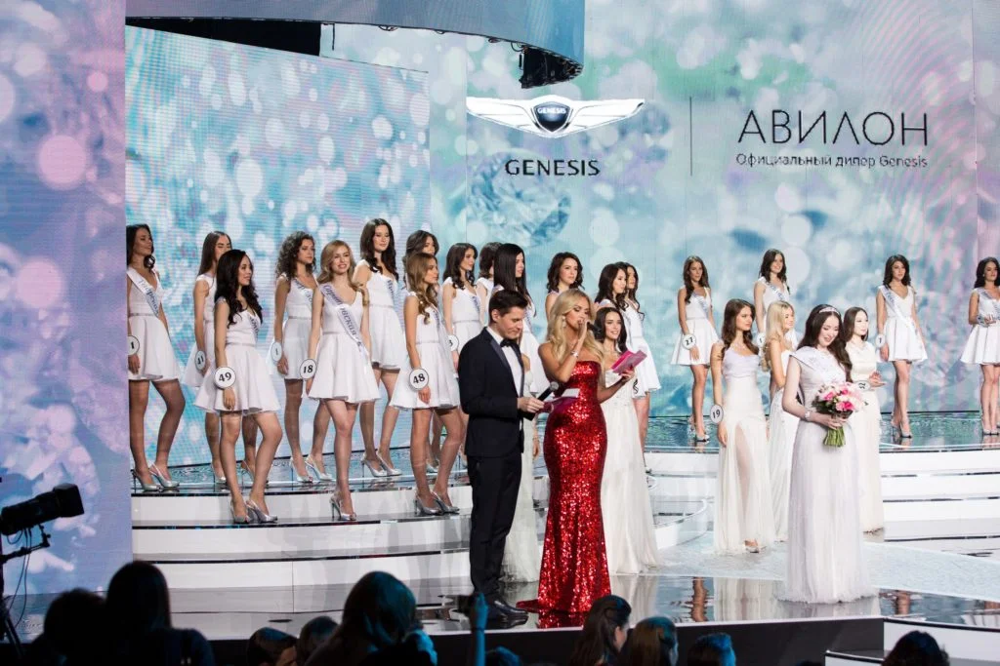
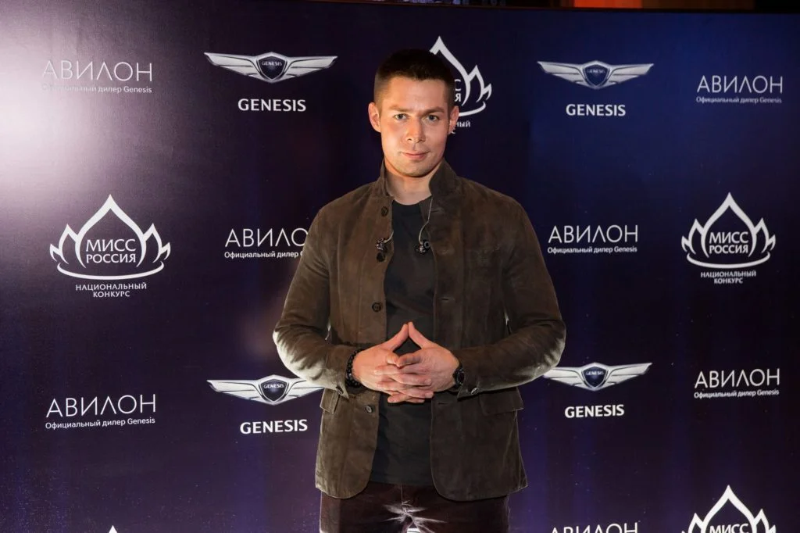
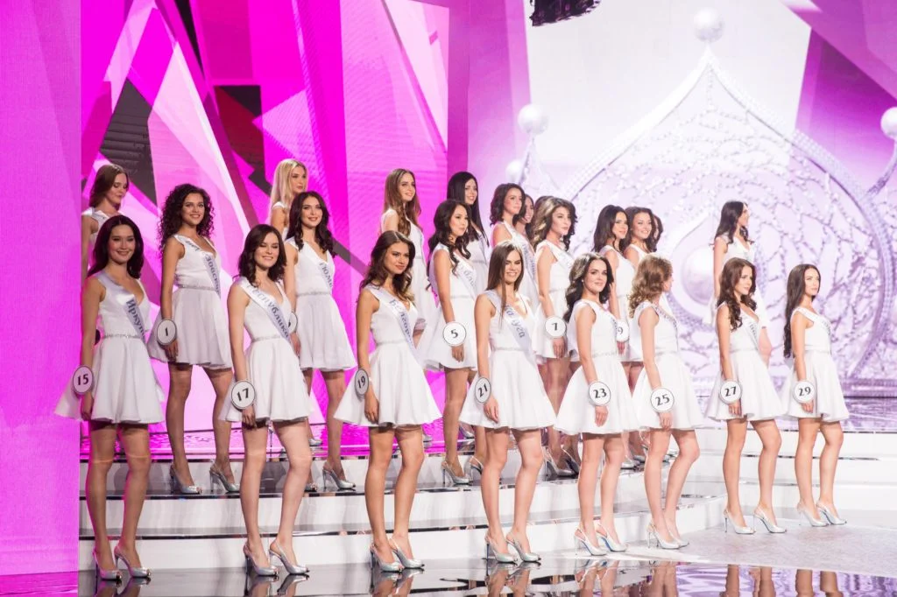
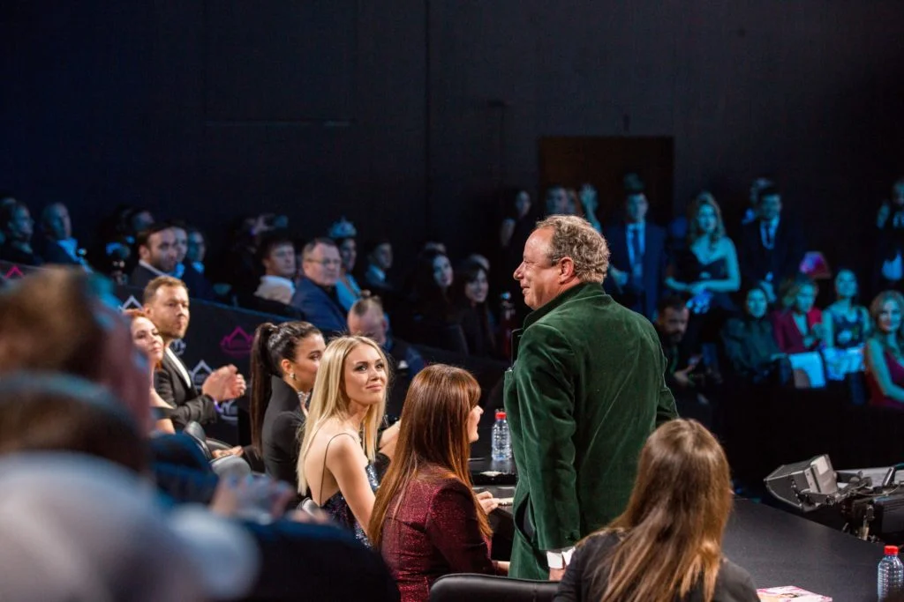
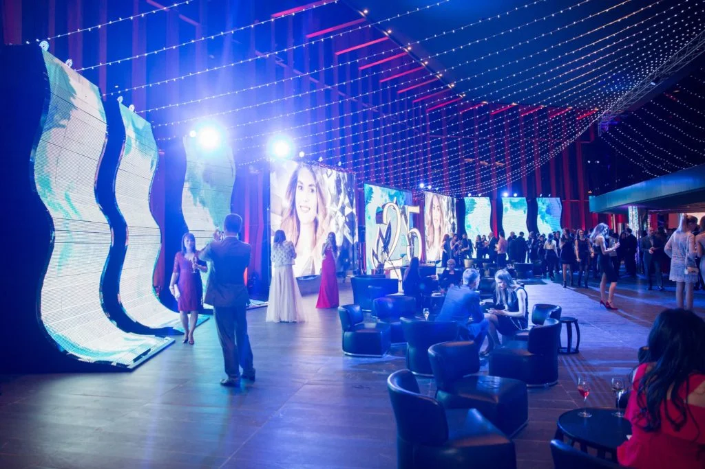
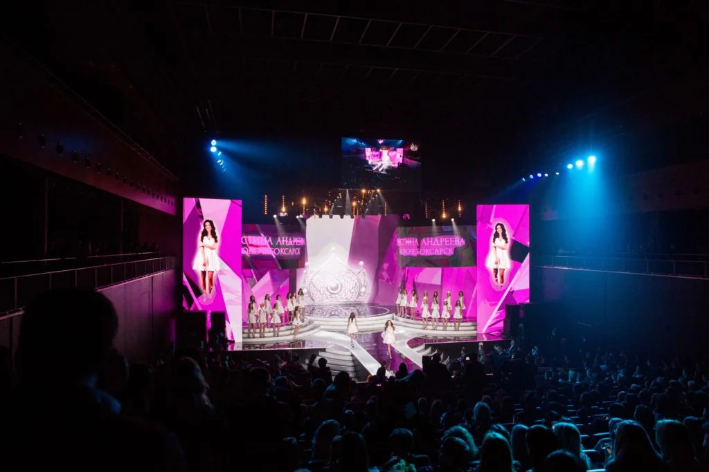

МИСС РОССИЯ 2017 / ИНТЕГРАЦИЯ БРЕНДА
Бренд в центре
яркого вечера.
Автомобиль, свет сцены и торжественный финал: «Авилон Hyundai» на национальном конкурсе «Мисс Россия 2017».
15 апреля 20171 000 гостейБарвиха Luxury Village
Вечер,
полный внимания.
В концертном зале Барвиха Luxury Village прошёл конкурс «Мисс Россия 2017». Задача проекта SPACE — интеграция «Авилон Hyundai» в событие на 1 000 гостей.
Появление бренда поддерживало торжественную атмосферу: автомобильная экспозиция, фотографии у брендированной стены и присутствие на сцене. В оформлении события представлены «Авилон» и Genesis.
1 000гостей
15.04.2017дата события
БарвихаLuxury Village
02 / КУЛЬМИНАЦИЯМомент,
Момент,
который остаётся
на фотографиях.
Финал конкурса объединил свет, эмоции и внимание гостей. Брендинг на сцене стал частью визуальной истории вечера — рядом с его главными героинями.

03 / ФОТОИСТОРИЯОт первого кадра
От первого кадра
до финальных аплодисментов.






СЛЕДУЮЩИЙ ПРОЕКТ